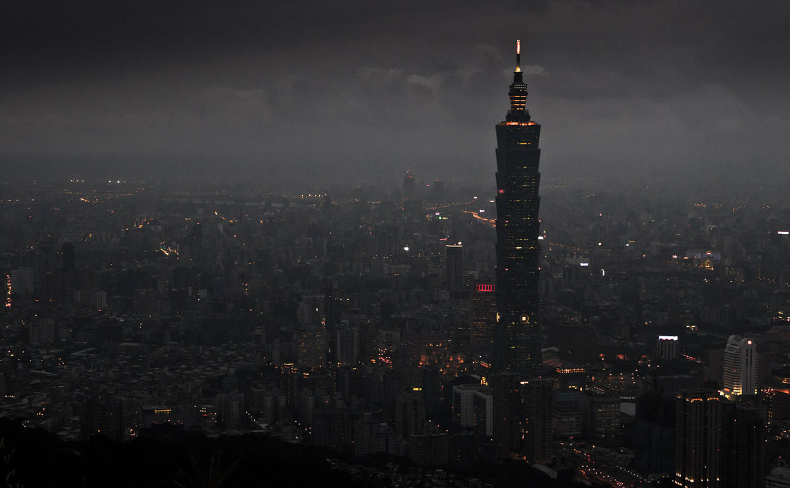
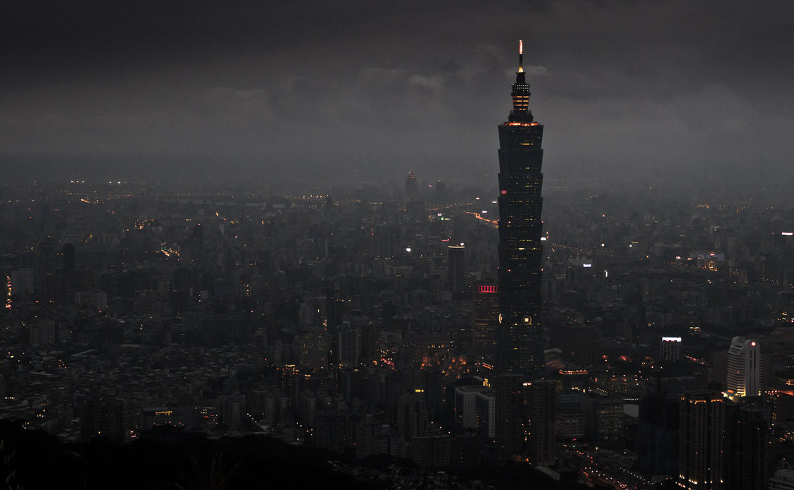

ROPE
Alfred Hitchcock talks to actors before shooting (1948). The film is one of Hitchcock's most experimental and "one of the most interesting experiments ever attempted by a major director working with big box-office names.


 
